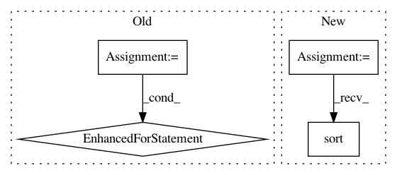

72f3f5bf50ed2d91cdcfbe2cf47120a2df8883cd,nilmtk/elecmeter.py,ElecMeter,_get_stat_from_cache_or_compute,#ElecMeter#,415
Before Change
key_for_cached_stat = self.key_for_cached_stat(results_obj.name)
if loader_kwargs.get("preprocessing") is None:
cached_stat = self.get_cached_stat(key_for_cached_stat)
for section in sections:
try:
row = cached_stat.loc[section.start]
except KeyError:
sections_to_compute.append(section)
else:
end_time = row["end"]
if end_time == section.end:
usable_sections_from_cache = (
usable_sections_from_cache.append(row))
else:
sections_to_compute.append(section)
else:
sections_to_compute = sections
if not sections_to_compute:
After Change
// Get sections_to_compute
sections_to_compute = set(sections) - set(results_obj.timeframes())
sections_to_compute = list(sections_to_compute)
sections_to_compute.sort()
else:
sections_to_compute = sections
if not results_obj._data.empty:
In pattern: SUPERPATTERN
Frequency: 3
Non-data size: 4
Instances
Project Name: nilmtk/nilmtk
Commit Name: 72f3f5bf50ed2d91cdcfbe2cf47120a2df8883cd
Time: 2014-11-26
Author: jack-list@xlk.org.uk
File Name: nilmtk/elecmeter.py
Class Name: ElecMeter
Method Name: _get_stat_from_cache_or_compute
Project Name: invesalius/invesalius3
Commit Name: b331b9f29062a0e888dafc7a7d19ca8fa53286c1
Time: 2020-03-23
Author: totonixsame@gmail.com
File Name: invesalius/segmentation/brain/utils.py
Class Name:
Method Name: get_plaidml_devices
Project Name: andresriancho/w3af
Commit Name: 7b7b6121a7fe03d9af2e1a78f3d03ae27d70d13f
Time: 2017-11-29
Author: andres.riancho@gmail.com
File Name: w3af/plugins/audit/file_upload.py
Class Name: file_upload
Method Name: _generate_urls